阶段一 · 破冰与建立信心 ｜ 难度：★★★☆☆ ｜ 预计用时：45–60 分钟
本课材料：ESP32 开发板 ×1、USB 线 ×1、面包板、LED ×1、220Ω 电阻 ×1、杜邦线若干（沿用第 2 课的接线） 无硬件替代：Wokwi 模拟器方案见文末，代码与实物完全相同

你将做出：面包板上的 LED 像睡着的人一样呼吸——亮度从全灭平滑升到全亮，再平滑降回，循环往复，没有一丝卡顿。
上一课的灯只有"全亮 / 全灭"两档，像开关；这一课它有了"半亮"，像调光旋钮。而实现它的方式，会彻底改变你写程序的方式。
本课学习目标（完成后你将拥有）：
analogWrite() 与占空比（Duty Cycle），亲手画出呼吸曲线delay()：用"记录时间"代替"原地罚站"，程序在等待时也能干活delay 版呼吸灯的抽搐 vs 非阻塞版的丝滑第 1 课拆解 digitalWrite 时留了个问题：数字信号只有 0 和 1 两档，为什么不能输出 1.5V 让灯半亮？
现在你能得到完整答案：
digitalWrite 的硬件本质是个开关——它只能接通 3.3V 或接通 0V，没有"接通一半"的物理状态。就像水龙头只能全开或全关，没法停在"半开的某个精确位置"。PWM（Pulse Width Modulation，脉冲宽度调制） 的想法极其巧妙：
与其输出一个"半吊子电压"，不如全速开关很多次——高电平占的时间多，平均下来就"显得"电压高。
占空比 25%： ██░░░░░░ 亮 1/4 时间 → 平均亮度 ≈ 25%
占空比 50%： ████░░░░ 亮一半时间 → 平均亮度 ≈ 50%
占空比 75%： ██████░░ 亮 3/4 时间 → 平均亮度 ≈ 75%
占空比100%： ████████ 常亮 → 亮度 100%
（█ = 高电平 3.3V，░ = 低电平 0V）
关键在"快"：ESP32 的 PWM 频率默认约 5kHz（每秒开关 5000 次），人眼完全分辨不出闪烁，只看到平均亮度。LED 还来不及暗下去，下一个脉冲又来了——于是它"以为"自己一直亮着，只是没那么亮。
💡 回到第 1 课的问题：所以"输出 1.5V"的正确姿势不是找一个 1.5V 档位，而是 50% 占空比的 PWM。你每次拧台灯调光、手机滑动亮度条，背后全是这套把戏。
红色虚线是平均电压——LED 真正"感受到"的值。占空比 50% 时方波上下对称，平均恰好 1.65V：这就是"输出 1.5V 半亮"的正确实现方式。试试 0% 和 100%，对照第 1 课的 digitalWrite(LOW/HIGH)。
analogWrite()——名字骗人，写的是"占空比"Arduino 的 API 名字起得有历史包袱：analogWrite 听起来像"输出模拟电压"，实际是设置 PWM 占空比：
analogWrite(LED_PIN, 0); // 占空比 0% → 全灭
analogWrite(LED_PIN, 64); // 占空比 25% → 微亮（64/255）
analogWrite(LED_PIN, 128); // 占空比 50% → 半亮（约 128/255）
analogWrite(LED_PIN, 255); // 占空比 100% → 全亮
取值范围 0–255（8 位），255 是全亮。记住这个映射：
analogWrite 的值 占空比 直观感受
0 ──────────── 0% 全灭
64 ──────────── 25% 隐约可见
128 ──────────── 50% 半亮
255 ──────────── 100% 最亮
第 2 课的 digitalWrite(HIGH/LOW) 其实就是 analogWrite(255) 和 analogWrite(0) 的特例——数字输出是 PWM 的两个极端。
最直觉的写法（也是新手必经之路）：
// ❌ delay 版：每一档亮度之间罚站 10ms
for (int b = 0; b <= 255; b++) {
analogWrite(LED_PIN, b);
delay(10); // 等 10ms 再升一档
}
它能亮，但有两个致命伤：
delay(10) 期间程序完全冻结，时间精度受中断干扰，每档实际耗时忽长忽短——亮度台阶不均匀，眼睛看到的是"卡顿的爬楼梯"而不是"丝滑的斜坡"。非阻塞的秘诀只有一句话：
不去"等 10ms"，而是"记住上次变化是什么时候，现在看看够不够 10ms"。
// ✅ millis() 版：程序永远在跑，只在"该变的时候"才变
unsigned long lastChange = 0; // 上次改变亮度的时刻
int brightness = 0; // 当前亮度
int step = 5; // 每次变化量
void loop() {
unsigned long now = millis(); // 读当前开机毫秒数
if (now - lastChange >= 10) { // 距上次变化已过 10ms？
lastChange = now; // 记下这次的时刻
brightness += step; // 亮度进一档
if (brightness >= 255 || brightness <= 0) step = -step; // 到头反向
analogWrite(LED_PIN, brightness);
}
// —— 等待期间，这里可以随便干别的：读按钮、发串口、喂看门狗 ——
}
逐行拆解这三个新朋友：
unsigned long now = millis();
millis() 返回程序上电以来经过的毫秒数，只增不减的时钟。它不阻塞——读它的瞬间就返回，程序继续跑。
now - lastChange >= 10
时间差够不够 10ms？够了才执行变化。这是"检查"，不是"等待"——没到 10ms 时 if 不成立，loop 立刻转下一圈，什么都不耽误。
step = -step（到头反向）
亮度升到 255 就把步长变负开始下降，降到 0 再变正——一个变量实现来回往返，呼吸就此循环。
🔑 心智模型切换：
delay思维 = "我要等 10ms" → 程序停下来millis思维 = "到点了吗？没到我先干别的" → 程序一直活着这是嵌入式编程最重要的一次思维升级。从今天起，所有"定时"都用 millis 记时间，delay 只许出现在"我真的什么都不能做"的场合（比如烧录后短暂稳定）。
切到 delay 版：任务条会被"罚站"塞满，按钮/串口全部失联；millis 版里绿色自由区永远畅通——第 10 课蓝牙断线的案发现场，就是这张图。
上图左边是 delay 版的"抽搐爬楼梯"，右边是 millis 版的平滑斜坡——点按钮切换看差别。
本课不需要动任何线：LED 仍在 GPIO4（经 220Ω 电阻），按钮（GPIO23）本课用不上但留着无妨。
Wokwi 方案：沿用第 2 课项目，只换代码，点 Start 即可。
// ============================================
// 第 3 课：呼吸灯 —— PWM + millis 非阻塞
// ============================================
const int LED_PIN = 4; // 外接 LED（沿用第 2 课接线）
int brightness = 0; // 当前亮度 0–255
int step = 5; // 每次变化量（负值 = 变暗）
unsigned long lastChange = 0; // 上次变化的时刻（millis 记录）
const unsigned long INTERVAL = 10; // 每 10ms 变一档
void setup() {
pinMode(LED_PIN, OUTPUT);
Serial.begin(115200);
Serial.println("呼吸灯启动（millis 非阻塞版）");
}
void loop() {
unsigned long now = millis(); // ① 读当前时刻
if (now - lastChange >= INTERVAL) { // ② 够 10ms 了吗？
lastChange = now; // ③ 记下这次时刻
brightness += step; // ④ 亮度进一档
if (brightness >= 255 || brightness <= 0) {
step = -step; // ⑤ 到头反向，开始呼吸
}
analogWrite(LED_PIN, brightness); // ⑥ 输出新亮度
Serial.println(brightness); // ⑦ 串口输出，画曲线用
}
// ⑧ 这里是"自由时间"——delay 版里它是不存在的
}
① unsigned long now = millis();
拿到程序运行时钟。unsigned long 是它的固定类型（32 位无符号，约 49.7 天后溢出归零——工业上要处理，入门先知道有这回事）。
② now - lastChange >= INTERVAL
核心判断：时间差够了吗。注意用减法而不是"now >= lastChange + INTERVAL"——减法天然免疫溢出问题（只要差值小于 2^32），这是嵌入式老手的肌肉记忆。
③ lastChange = now;
更新基准时刻。必须写成 now 而不是重新读一次 millis()——保证节奏稳定，不累积漂移。
④⑤ brightness += step + 到头反向
状态机的最小形态：一个变量记录"往哪走"，到边界自动掉头。第 2 课的 ledOn = !ledOn 是两态翻转，这里是连续量的往返——同一个思想的放大版。
**⑥ analogWrite(LED_PIN, brightness);
0–255 的值 → 占空比 → 平均亮度。值变一点，亮度就动一点，255 级灰度足够画出人眼无感的平滑曲线。
⑦ Serial.println(brightness);
每档都打印。打开串口监视器右上角的串口绘图器（Serial Plotter）**，你会直接看到一条锯齿状的三角波——代码里的数字变成了屏幕上的曲线，这就是工程师的"示波器视角"。
⑧ 自由时间
if 不成立时 loop 立刻转圈。你可以在这塞任何东西——本课留白，第 10 课你会往里塞蓝牙，然后亲手验证 delay 是怎么把它搞断线的。
delay( ——本课的硬性要求if (digitalRead(23) == LOW) Serial.println("按钮被按了");，呼吸照常进行的同时能打印——证明"等待期间程序还活着"全部打勾 → 你完成了嵌入式最重要的思维升级（非阻塞编程）。进入第 4 课。
INTERVAL 改成 2、10、40，观察呼吸快慢。思考：为什么改一个常量就能改物理世界的节奏？| 现象 / 报错关键词 | 原因 | 解决办法 |
|---|---|---|
| 灯常亮不呼吸，串口也没输出 | 代码没上传成功 / COM 口选错 | 重新上传；工具 → 端口确认；仍失败按住 BOOT 再上传 |
| 灯在两三个亮度间跳变，不平滑 | ① 用了 delay 版 ② brightness += step 的 step 太大 |
确认代码是 millis 版；step 改成 2–5 |
| 呼吸方向不对（亮起后卡住不动） | 反向逻辑写错，step 没取负 |
检查 if (brightness >= 255 || brightness <= 0) step = -step; 是否完整 |
| 串口绘图器一片乱码 | 波特率不匹配 | 监视器/绘图器右下角改 115200 |
error: 'analogWrite' was not declared |
板子型号选错 | 工具 → 开发板确认 ESP32 Dev Module |
| 灯完全不亮但程序在跑（串口有输出） | LED 引脚接错或电阻虚插 | 核对接线（GPIO4 → 220Ω → LED），重新压实 |
| 摄像头拍到滚动黑条 | PWM 频率与快门同步的正常光学现象 | 低占位比时可能出现，不影响实物观感；串口曲线才是准绳 |
| 呼吸到头后不回头 | 反向判断的边界值写反 | 确认是 ||（或关系）不是 && |
呼吸灯让你第一次拥有了"连续量"——但它的亮度值是你写死在代码里的。第 4 课：模拟世界——ADC 与电位器：你会接一个真实的旋钮（电位器），把"手拧的位置"读成 0–4055 的数字，用旋转来控制呼吸灯的亮度——输出的连续量接上输入的连续量，闭环就此形成。同时你会第一次见识 ESP32 模拟输入的两个坑（12 位分辨率、ADC2 与 Wi-Fi 冲突），第 6 课引脚清算前先攒两个新证据。
本课程系列：从点亮一盏灯，到设计一台会自己思考的机器。